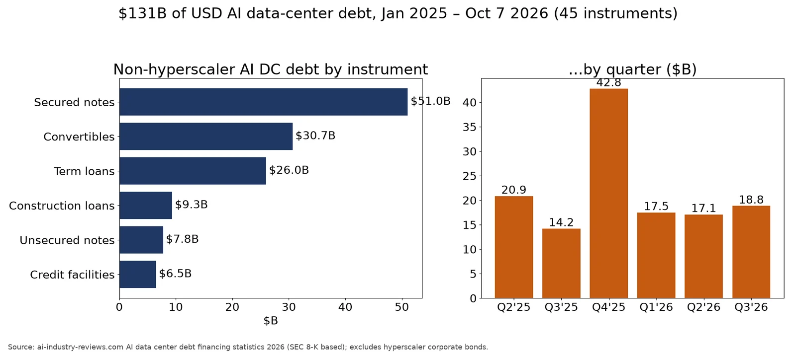
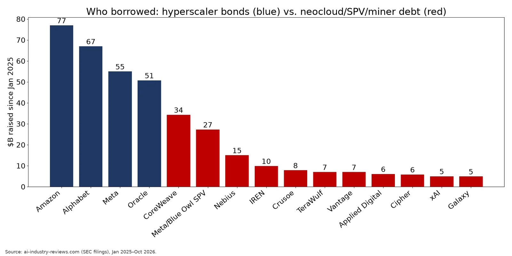

Q3. Financing

- Outside the hyperscalers, AI data-center borrowers have raised $131B of USD debt since Jan-2025 across 45 deals. Secured notes are the largest piece ($51B), followed by converts ($31B). CoreWeave alone raised $34B. (source)
- Neoclouds and bitcoin-miner conversions mostly use high-yield secured notes. Examples are TeraWulf ($3.2B at 7.75%, with Google backstopping about $1.8B), Cipher, Applied Digital and Galaxy (9.875%), plus the Meridian/Fluidstack $5.7B high-yield bond. (source)
- Securitization is also in use: QTS BX 2025-VOLT ($3.5B CMBS) and Switch ($3.5B CMBS plus ABS). (source)
- High-yield issuance is accelerating. US AI high-yield issuance in the first four months of 2026 ($26.6B) was more than double the 2025 total. (source)
Source: ai-industry-reviews.com AI data center debt financing statistics 2026 (SEC 8-K based); excludes hyperscaler corporate bonds.
https://ai-industry-reviews.com/research/ai-data-center-debt-financing-statistics-2026/

- Outside the hyperscalers, AI data-center borrowers have raised $131B of USD debt since Jan-2025 across 45 deals. Secured notes are the largest piece ($51B), followed by converts ($31B). CoreWeave alone raised $34B. (source)
- Hyperscalers have also issued about $250B of corporate bonds of their own: Amazon $77B, Alphabet $67B, Meta $55B and Oracle $50.75B. (source)
Source: ai-industry-reviews.com (SEC filings), Jan 2025–Oct 2026.
https://ai-industry-reviews.com/research/ai-data-center-debt-financing-statistics-2026/